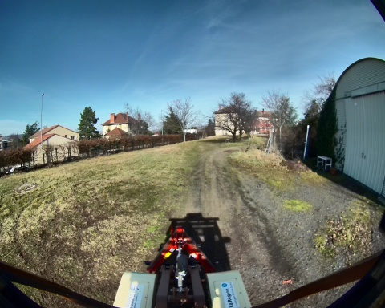
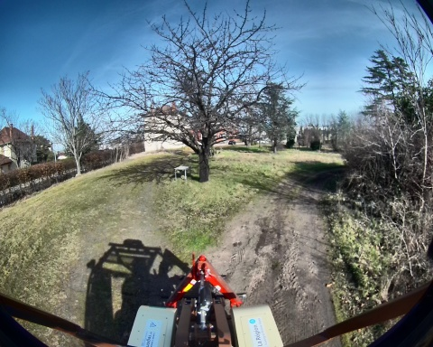
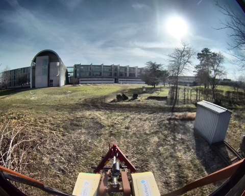
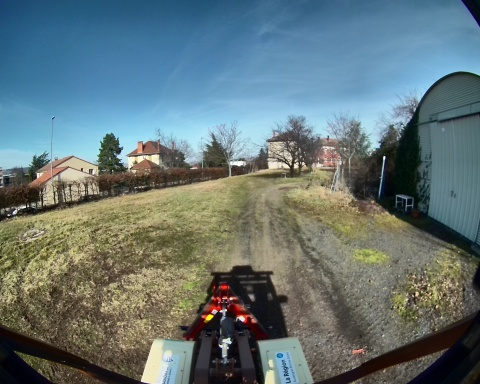
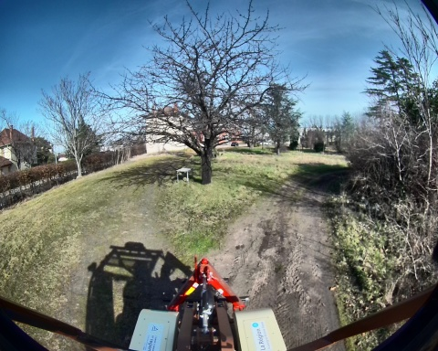
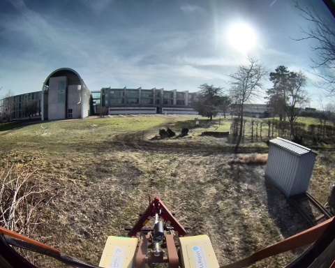

Chemin complet : /data/synchro_data/Innodura/Agrivia/Données/2025_bag/loop_auto_1_20_02_2025



Files: loop_auto_1_20_02_2025_0.db3
Bag size: 4.9 GiB
Storage id: sqlite3
Duration: 121.508640023s
Start: Feb 20 2025 14:49:33.899210323 (1740059373.899210323)
End: Feb 20 2025 14:51:35.407850346 (1740059495.407850346)
Messages: 79689
Topic information: Topic: /robot/imu/data | Type: sensor_msgs/msg/Imu | Count: 12138 | Serialization Format: cdr
Topic: /robot/base/controller/odometry | Type: romea_mobile_base_msgs/msg/OneAxleSteeringMeasureStamped | Count: 1214 | Serialization Format: cdr
Topic: /robot/base/controller/odom | Type: nav_msgs/msg/Odometry | Count: 1213 | Serialization Format: cdr
Topic: /robot/robot_description | Type: std_msgs/msg/String | Count: 1 | Serialization Format: cdr
Topic: /robot/base/bridge/vehicle_controller/odom | Type: nav_msgs/msg/Odometry | Count: 1210 | Serialization Format: cdr
Topic: /alpo/camera/image_synchro | Type: sensor_msgs/msg/Image | Count: 602 | Serialization Format: cdr
Topic: /robot/gps/ntrip/rtcm | Type: mavros_msgs/msg/RTCM | Count: 1328 | Serialization Format: cdr
Topic: /diagnostics | Type: diagnostic_msgs/msg/DiagnosticArray | Count: 1087 | Serialization Format: cdr
Topic: /rosout | Type: rcl_interfaces/msg/Log | Count: 1427 | Serialization Format: cdr
Topic: /robot/gps/nmea_sentence | Type: nmea_msgs/msg/Sentence | Count: 3642 | Serialization Format: cdr
Topic: /robot/imu/imu_data_str | Type: std_msgs/msg/String | Count: 12139 | Serialization Format: cdr
Topic: /tf_static | Type: tf2_msgs/msg/TFMessage | Count: 6 | Serialization Format: cdr
Topic: /robot/imu/velocity | Type: geometry_msgs/msg/TwistStamped | Count: 12139 | Serialization Format: cdr
Topic: /alpo/lidar/pointcloud_synchro | Type: sensor_msgs/msg/PointCloud2 | Count: 601 | Serialization Format: cdr
Topic: /robot/gps/vel | Type: geometry_msgs/msg/TwistStamped | Count: 1206 | Serialization Format: cdr
Topic: /robot/joystick/joy | Type: sensor_msgs/msg/Joy | Count: 905 | Serialization Format: cdr
Topic: /robot/imu/mag | Type: sensor_msgs/msg/MagneticField | Count: 12139 | Serialization Format: cdr
Topic: /parameter_events | Type: rcl_interfaces/msg/ParameterEvent | Count: 0 | Serialization Format: cdr
Topic: /robot/gps/fix | Type: sensor_msgs/msg/NavSatFix | Count: 1214 | Serialization Format: cdr
Topic: /tf | Type: tf2_msgs/msg/TFMessage | Count: 3339 | Serialization Format: cdr
Topic: /robot/joint_states | Type: sensor_msgs/msg/JointState | Count: 12139 | Serialization Format: cdr